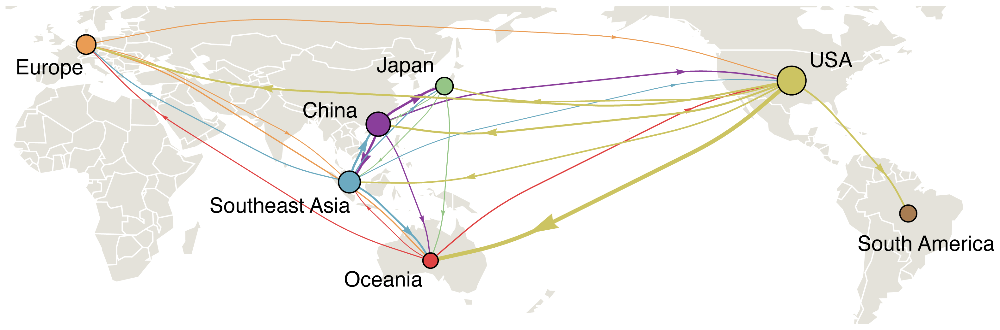
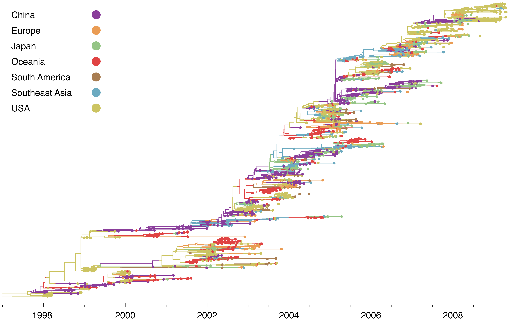
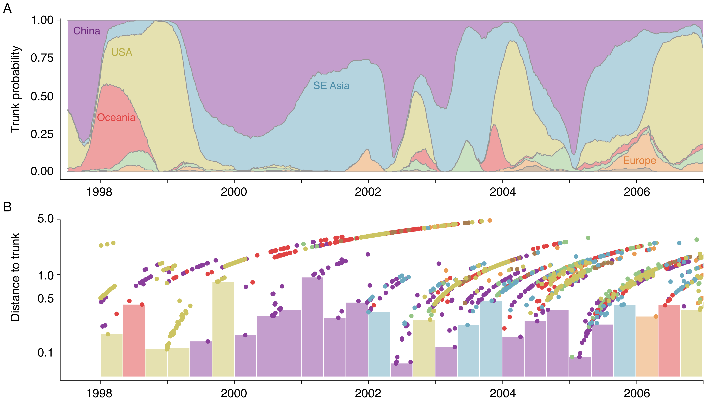
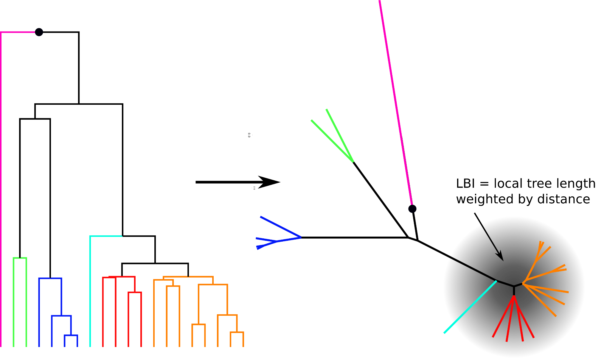
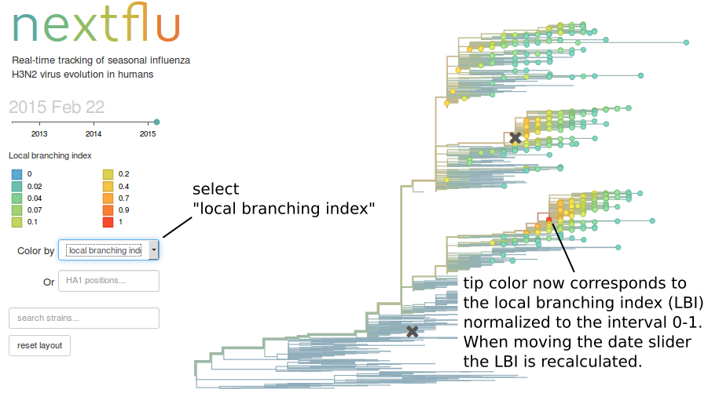

Why phylogenetics?
Erick Matsen
Popular image of phylogenetics

What can we do with phylogenetics?
Examples today:
- Felsenstein independent contrasts
- Understanding flu transmission
Genome of the whale shark, Earth's largest fish—contributed by @geochurch and colleagues. Ostensibly extremely significant correlations are reported between physiological and genomic features across taxa, interpreted as evincing scaling laws. https://t.co/9EvT18ClPR (1/n)
— William DeWitt (@wsdewitt) August 5, 2020
Paper link. gray: Hyperoartia, Ascidiacea, Chromadorea, Insecta, and Saccharomycetes; turquoise: Chondrichthyes [cyan indicates whale shark]; light blue: Actinopterygii; aquamarine: Sarcopterygii; dark green: Amphibia; light green: Reptilia; dark yellow: Aves; orange: Mammalia
Say we measure two traits

Do traits \(X\) and \(Y\) look correlated?

Do traits \(X\) and \(Y\) look correlated?

Stars from left branch, squares from the right

Felsenstein 1985
Felsenstein, J. (1985). Phylogenies and the Comparative Method. The American Naturalist, 125(1), 1–15. [PDF]
Huey, R. B., Garland, T., Jr, & Turelli, M. (2019). Revisiting a Key Innovation in Evolutionary Biology: Felsenstein’s “Phylogenies and the Comparative Method.” The American Naturalist, 193(6), 755–772. [DOI]
This paper blows big holes in these papers:
- Kryuchkova-Mostacci, N., & Robinson-Rechavi, M. (2016). Tissue-Specificity of Gene Expression Diverges Slowly between Orthologs, and Rapidly between Paralogs. PLoS Computational Biology, 12(12), e1005274. [DOI]
- Levin, M., Anavy, L., Cole, A. G., Winter, E., Mostov, N., Khair, S., … Yanai, I. (2016). The mid-developmental transition and the evolution of animal body plans. Nature, 531, 637. [DOI]
… don’t make this mistake, please!
For a paper that does it right…
Schraiber, J. G., Mostovoy, Y., Hsu, T. Y., & Brem, R. B. (2013). Inferring evolutionary histories of pathway regulation from transcriptional profiling data. PLoS Computational Biology, 9(10), e1003255. [DOI]
Where does the flu come from?
Bedford, T., Cobey, S., Beerli, P., & Pascual, M. (2010). Global Migration Dynamics Underlie Evolution and Persistence of Human Influenza A (H3N2). PLoS Pathogens, 6(5), e1000918. [DOI]
Infer trunk location
Infer trunk location
Where is flu going?
I.e. which virus is going to take over the population?
Local branching index
Local branching index in nextflu.org
Try it out
Neher, R. A., & Bedford, T. (2015). nextflu: Real-time tracking of seasonal influenza virus evolution in humans. Bioinformatics . [DOI]
Neher, R. A., Russell, C. A., & Shraiman, B. I. (2014). Predicting evolution from the shape of genealogical trees. eLife, 3. [DOI]
Hadfield, Megill, Bell, Huddleston, Potter, Callender, …, Bedford, Neher, (2018). Nextstrain: real-time tracking of pathogen evolution. Bioinformatics. [DOI]